互联网总体架构设计
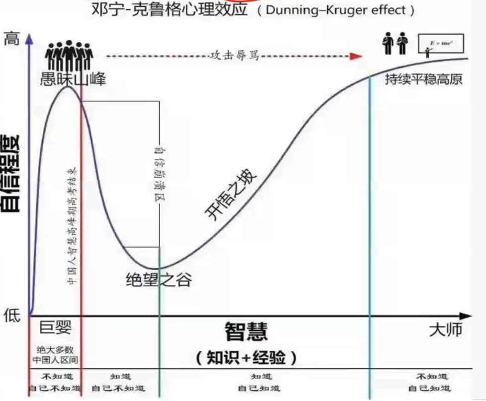
互联网架构演进之路
架构是什么
对场景的抽象后得出支撑骨架。场景不仅指业务场景，也包含人员技术研发能力、业务复杂度、数据规模大小、时间成本、运维能力等。架构为场景而生，被场景所弃。架构没有最好，只有最合适。最合适的架构都是场景折中的结果。
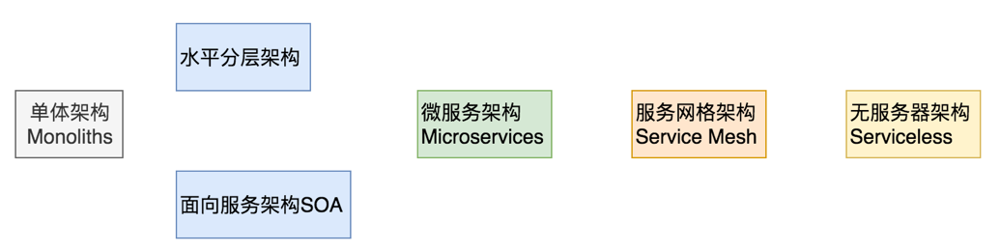
单体架构按请求功能水平拆分就是水平分层架构，按业务垂直拆分就是面向服务架构SOA。既水平拆分又垂直拆分就是微服务架构，剥离微服务架构中的通讯组件为单独进程就是服务网格架构。Serviceless即所谓的FAAS，方法即服务。
IaaS、PaaS、SaaS、BaaS、FaaS
- IaaS：Infrastructure as a Service（基础设施即服务）
IaaS处于最底层，服务商提供底层/物理层基础设施资源（服务器，数据中心，环境控制，电源，服务器机房），客户自己部署和执行操作系统或应用程序等各种软件。（只提供基础物理资源）
- PaaS：Platform as a Service（平台即服务）
PaaS处于中间层，服务商提供基础设施底层服务，提供操作系统（Windows，Linux）、数据库服务器、Web服务器、域控制器和其他中间件，以及服务模型中的备份服务等中件层服务。例如IIS，.NET，Apache，MySQL …，客户自己控制上层的应用程序部署与应用托管的环境。
- SaaS：Software as a Service（软件即服务）
SaaS处于最上层，服务商提供基于软件的解决方案，满足客户最终需求；如OA、CRM、MIS、ERP、HRM、CM、Office 365、iCloud等应用，客户不需考虑任何形式的专业技术知识，获得完整的软件包，使他们的日常工作和生活变得更轻松。（软件的开发、管理、部署都交个第三方，不需要关系技术问题，可以拿来即用）
- BaaS：Backend as a Service（后端即服务）
服务商为客户（开发者）提供整合云后端的服务，如提供文件存储、数据存储、推送服务、身份验证服务等功能，以帮助开发者快速开发应用。（自己的理解应该是SaaS细粒度化后作为PaaS提供出去）
- FaaS：Function as a service（函数即服务）
无服务器计算，当前使用最广泛的是AWS的Lambada。
服务商提供一个平台，允许客户开发、运行和管理应用程序功能，而无需构建和维护通常与开发和启动应用程序相关的基础架构的复杂性。按照此模型构建应用程序是实现“无服务器”体系结构的一种方式，通常在构建微服务应用程序时使用。
另外，还有很多的aaS，比如DaaS(Data as a service，数据即服务)、NaaS(Network as a service，网络即服务) 等等。
单体架构设计与实践
Monoliths[ˈmɒnəʊlɪθs]、ALL IN ONE，所有的逻辑都在一个服务端完成，部署、测试、发布、扩展简单。如何扩展？通过nginx扩展。（单体架构扩展还是有问题的，比如session的问题，可通过ip_hash可以解决，radware也有类似的功能）
应用场景：
- 业务场景简单、功能不复杂、研发人员少
- 创业公司初期
- 性能要求极其苛刻的场景，如量化交易，高频交易（单体架构总体网络交互少，RT会低一些）
痛点：耦合太多（代码提交、上线、维护），通过拆分破局
- 1.复杂性高
整个项目包含的模块非常多，模块的边界模糊，依赖关系不清晰，代码质量参差不齐，整个项目非常复杂。每次修改代码都心惊胆战，甚至添加一个简单的功能，或者修改一个BUG都会造成隐含的缺陷。 - 2.技术债务逐渐上升
随着时间推移、需求变更和人员更迭，会逐渐形成应用程序的技术债务，并且越积越多。已使用的系统设计或代码难以修改，因为应用程序的其他模块可能会以意料之外的方式使用它。 - 3.部署速度逐渐变慢
随着代码的增加，构建和部署的时间也会增加。而在单体应用中，每次功能的变更或缺陷的修复都会导致我们需要重新部署整个应用。全量部署的方式耗时长、影响范围大、风险高，这使得单体应用项目上线部署的频率较低，从而又导致两次发布之间会有大量功能变更和缺陷修复，出错概率较高。 - 4.扩展能力受限，无法按需伸缩
单体应用只能作为一个整体进行扩展，无法结合业务模块的特点进行伸缩。 - 5.阻碍技术创新
单体应用往往使用统一的技术平台或方案解决所有问题，团队的每个成员都必须使用相同的开发语言和架构，想要引入新的框架或技术平台非常困难。由于单体架构的缺陷日益明显，所以越来越多的公司采用微服务架构解决上面提到的单体架构中的问题。不同于构建单一、庞大的应用，微服务架构将应用拆分为一套小且互相关联的服务。
数据库：垂直分库，水平分表
架构拆分：
- 架构按业务纬度垂直拆分，拆成多个服务（订单、用户等），面向服务架构；
- 架构按功能纬度水平拆分，拆成多层（网关层、业务逻辑层、数据访问层），分层架构。
面向服务架构设计与实践
SOA（Service-Oriented Architecture），单体架构按业务垂直拆分，比如应用拆成用户、商品、交易三个模块，部署成3个进程。服务之间通过企业服务总线（ESB）通信。
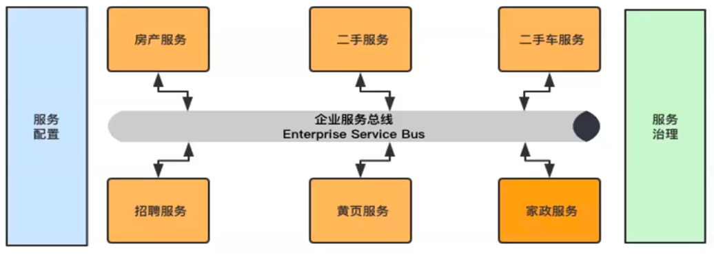
缺点：拆分后每个服务仍是单体。
水平分层架构设计与实践
单体架构按请求功能水平拆分，比如拆分成网关层、业务逻辑层、数据访问层三个进程。
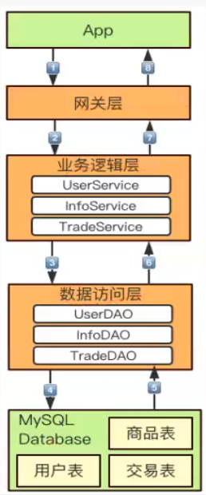
分层设计原则
展示服务与网关服务分离、网关服务与逻辑服务分离、逻辑服务与数据服务分离。
网关服务一般和业务逻辑无关，所以独立出来。
为什么要单独拆开数据服务层呢？数据服务层直接和数据库打交道，对研发人员的技术能力要求较高。这一层由技术好的研发人员开发。一般数据服务层不出问题，就不会出大问题。事务如何控制呢？通过分布式事务解决。同步分布式事务采用Saga模型，异步分布式事务基于事务消息或本地消息表。
另外一方面，业务逻辑层往往会部署很多，如果每一个都连接数据库，连接数会撑满，而数据访问层，并不用部署太多，由数据访问层来连接数据库。
网关层
网关层可以不同的业务逻辑层用一个，但部署多套。主要功能：
- 请求鉴权：登录鉴权
- 数据完整性检查：校验数据的完整性，主要一些通用字段的检查，而非业务字段的检查
- 协议转换：HTTP转TCP，json转map
- 路由转发：根据CMD（请求命名号，类似于我们的serverId）转发到不同的业务逻辑层
- 服务治理：限流、降级、熔断
网关的选型
| 对比纬度 | Zuul | Spring Cloud Gateway | Nginx | Kong | Tky | Node.js | 自研 |
|---|---|---|---|---|---|---|---|
| 编程语言 | Java | Java | C | C + Lua | Go | JS | Java |
| 成熟度 | 高 | 低 | 高 | 高 | 高 | 高 | 高 |
| 使用成本 | 低 | 较低 | 高 | 较低 | 较低 | 较低 | 低 |
| IO模型 | BIO | Netty | epoll | epoll | AIO | AIO | Netty |
| 技术生态 | Netflix | Spring Cloud | Nginx社区 | OpenRestry | Go社区 | Node.js社区 | 公司内部 |
| 适用场景 | 网关 | 网关 | 负载均衡 | 网关 | 网关 | 网关 | 网关 |
推荐Zuul。
业务逻辑层
实现具体的业务逻辑，业务逻辑判断，业务逻辑编排。
数据访问层
数据访问层功能
- CRUD：业务增删改查
- ORM：Object-Relationl Mapping，在关系型数据库和对象之间作一个映射，操作对象而非复杂的sql，推荐MyBatis3
- Sharding（分库分表）：推荐Sharding-JDBC（Sphere）
- 屏蔽底层存储差异：不同数据库、缓存等
同步架构还是异步架构？
异步架构
目的：提升吞吐量
手段：写消息队列。为什么写MQ比写DB快，MQ是顺序写，DB是随机写，而且如果MQ采用异步刷盘方式写内存。MQ可放在网关和业务逻辑层之间。
使用场景：写请求而非读请求，写请求也需要区分不同的业务类型
分几层？
太多，请求路径变长、平均响应延迟变高、定位问题变的复杂、运维成本增加；太少，单体架构；比较适中，四层架构：网关层、业务逻辑层、数据访问层、数据存储层；五层架构：网关层、异步消息队列层、业务逻辑层、数据访问层、数据存储层。
分层架构缺点：每层粒度过粗，再按业务垂直拆就是微服务架构，如何按业务拆，DDD领域驱动。
微服务架构设计与实践
In short, the microservice architectural style is an approach（[əˈprəʊtʃ] 建议、要求） to developing a single application as a suite of small services, each running in its own process and communicating with lightweight mechanisms, often an HTTP resource API. These services are built around business capabilities and independently deployable by fully automated deployment machinery. There is a bare minimum of centralized management of these services, which may be written in different programming languages and use different data storage technologies.
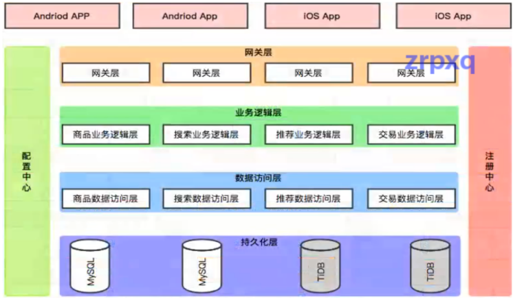
2个纬度拆分，按业务垂直拆分，按功能水平拆分。
目的：项目快速迭代、项目持续交付，降本增效
使用场景：
- 需求层面：需求变化不大的，不建议用微服务架构
- 性能层面：使用微服务后吞吐量变高，但RT也会变高（请求链路变长），对性能要求非常高的不建议采用微服务架构
- 数据一致层面：最终一致性
普适的完整微服务架构：
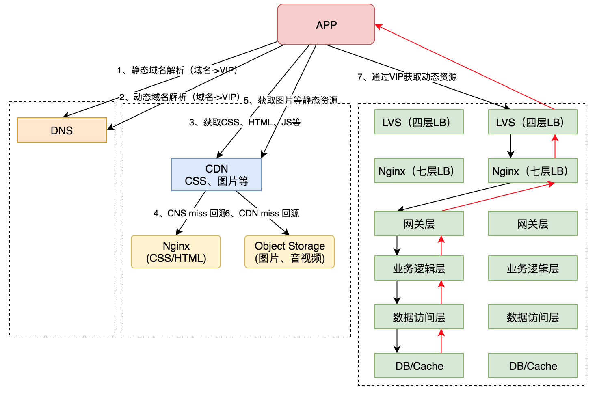
微服务的问题：
- 通信组件需要集成到业务程序中，尽管是以jar包的方式。
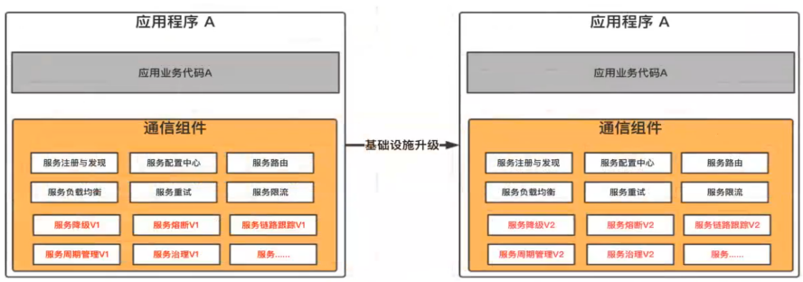
- 业务需要关注服务间通信：业务迭代速度慢
- 基础设施组件升级困难：影响基础设施团队的交付能力和交付速度
- 多编程语言之间通信问题：业务每种语言一套基础设施，成本大
微服务架构的演进
业务团队专注于业务逻辑本身、服务通信交给基础设施团队、物理解耦业务研发团队和基础设施团队、一套基础设施支持多语言开发、基础设施能力从应用程序中下推、真正做到快速迭代，持续交付。
服务网格架构设计与实践
服务网格是什么？
服务网格是一个基础设施层，用于处理服务间的通信；云原生应用有着复杂的服务拓扑，服务网格负责在这些拓扑中实现请求的可靠传递；在实践中，服务网格通常实现为一组轻量级网络代理，与应用程序部署在一起，而对应用程序透明。
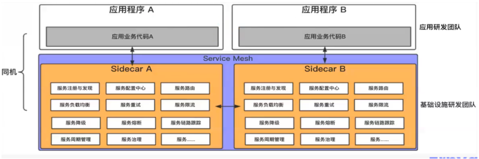
开源产品：Istio，来自Google、IBM、Lyft公司，采用Go/C++语言，代理部署为Sidecar
Service Mesh优点：
- 1、Service Mesh独立进程、独立升级
- 2、业务团队专注于业务逻辑本身
- 3、一套基础设施支持多语言开发
- 4、业务团队和基础设施团队物理解耦
- 5、服务治理和服务本身的物理剥离
普适的完整服务网格架构：
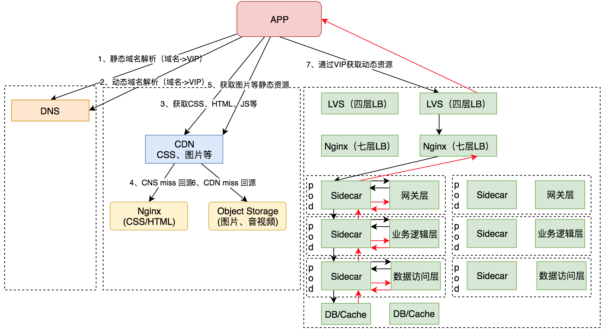
SideCar和应用程序部署在一个pod中。
案例实践
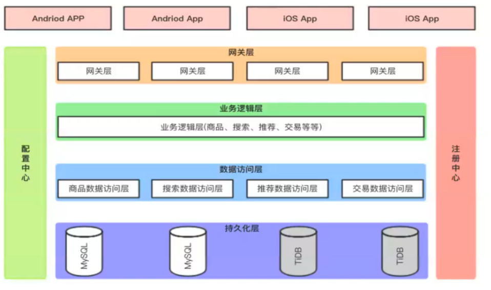
分为网关层、业务逻辑层、数据访问层、DB/Cache
存在问题：业务逻辑层，粒度粗，所有业务逻辑耦合在一个物理内部进程内，迭代效率低
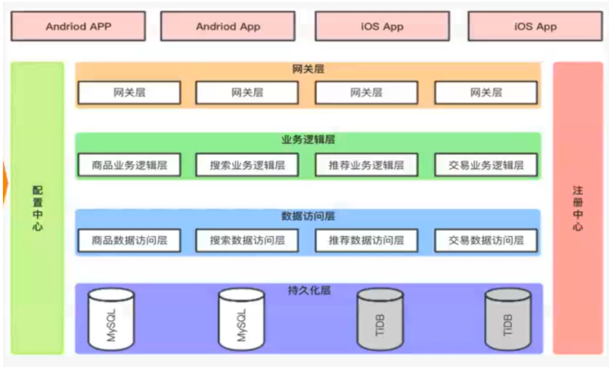
对业务逻辑层进行垂直拆分
存在问题：公共业务逻辑层，组件化，引用jar包
服务化，下层为独立服务，提供兼容接口
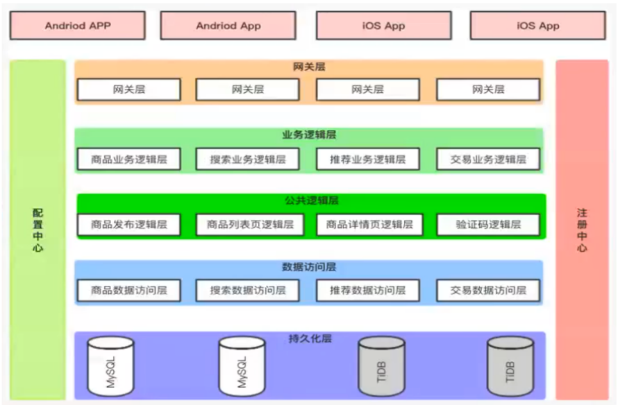
抽象公共业务逻辑。抽象出一层公共业务逻辑层，业务逻辑中涉及公共的业务逻辑就可以调用这一层。